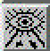

|
|  |
View All adjusts the camera position and orientation to view all objects.
Note:
| You can also use View All in the Viewer Popup Menu (menu COVISE Renderer, option 'Functions', available by clicking with the right mouse button on the viewer area) |
|
Pressing the seek mode button changes the
cursor to the seek mode symbol (reticle).
Warning: You must
be in ViewMode
to select seek mode!
If you click on any part of your geometry, Seek Mode will set the camera position
| This is the default operation for seek mode ('seek to point'). You can change this by using the PreferenceSheet: If you select 'seek to object' your whole object is centered without changing the orientation. |
| You can also use Seek in the Viewer Popup Menu (menu COVISE Renderer, option 'Functions', available by clicking with the right mouse button on the viewer area) |
The options ViewAll, SeekMode and ProjectionMode change your view of the object(s) in the viewer area .